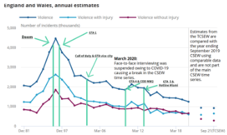

I think I speak for a lot of gamers when I question the media’s portrayal of video games as the 21st century's moral devil. Certainly, it's been on the news often enough. Since the inception of video games, there has been a controversy around violence, an issue primarily highlighted in America, however, the issue of aggression is not something that has been discussed in America alone. The discussion of the violent effects of video games is an international issue, in which the facts have wide-ranging effects in society.
Video games are not the first media to be flung into the embers of the culture war for their depiction of violence. The beginning can be traced to the 1950s, in a similar fight against comic books. As ludicrous as it sounds, comic books were blamed for an increase in crime in young people. In 1955, the British parliament banned comic books which could “corrupt a child and young person”. After the law was revised in 1991, laws around the sale of comic books containing violence loosened dramatically. Nowadays comics are actually more violent than those of the 50s, yet they are not taboo, but cherished, often collectables. This shares similarities to attempted bans on ‘satanic’ or ‘violent’ music in previous years. I mention this to show not only that perceived and portrayed violence is something which is constantly blamed by the media for increases in youth crime, but also because the banning of media does not decrease aggressive behaviour, but instead takes away the pastimes of people and actually increases interest in these things. One significant factor that videogames are blamed for is that simulated crime, seen in games such as GTA. Police statistics, however, completely disagree with the insinuation that these games are the sole cause of such violence, though. The wider stats over violent attacks would, in fact, show that most violent perpetrators do not even play video games. So, if it is not the video games, why are they so often blamed for violence? Video games are highly interactive, allowing the player to simulate an almost realistic experience of violence- anyone would expect to have a greater effect on the individual. However, some researchers such as those of psychology today argue that this is a very minimal factor in things causing people to behave aggressively. Many researchers believe much larger factors are high testosterone, the effects of alcohol and low serotonin; an “aggression cocktail,” as described by Kevin Bennet, a researcher with a PHD in human psychology. Furthermore, has crime even increased with the sale of video games?

Although the numbers chosen here are English and Welsh, the same trend has been found in many other countries including the US and Scotland. If the video games were, indeed, causing people to repeat what they see, we should see the opposite of what’s on the graph. In fact the reason we see a huge drop in youth crime is due to police dealing with youth crime less harshly, young people behaving generally better. It may even be the case that having more entertainment accessible prevents youth crime, by reducing the need to seek out entertainment through risky or antisocial behaviour.
Of course, video games are not perfect, a rampant problem of banter dissolving into homophobic abuse or that groups can feel they cannot get into gaming. Young people especially need to be careful online, as they don't know the person on the other side of the screen. On the problem of aggression and violence, some games go too far and show content which really does not seem necessary. However, we cannot simply remove violence from video games, we have a game rating system for a reason, and this system is made to ensure that games warn of their maturity. We also cannot simply blame violent or aggressive behaviour on gaming alone as there are many factors which contribute to such behaviour- lots of gamers will never commit violent acts. Lots of violent criminals have never played video games.
I know, videogames having a positive rffect is something rarely reported. According to an Article in the American Psychological Association by Lisa Bowen. “While one widely held view maintains that playing video games is intellectually lazy, such play actually may strengthen a range of cognitive skills such as spatial navigation, reasoning, memory and perception, according to several studies reviewed in the article. This is particularly true for shooter video games, which are often violent, the authors found. A 2013 meta-analysis found that playing shooter video games improved a player's capacity to think about objects in three dimensions just as well as academic courses designed to enhance these same skills” Gaming, in the end like any other hobby, will teach new skills and allow you to speak to people you may have never spoken to before, and whilst there have certainly been a lot of negative interactions beyond the years, companies are stepping to make this history by rewarding players who behave well. The gaming market is growing for a reason, and one of those reasons, is for someone who plays healthy hours, there is a sense of fun and community to come of it, and if that fun is harmless, is there really a need to step in? I don't think so.